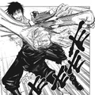
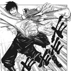

HABILIDADES
Toji Fushiguro fue miembro de uno de los tres grandes clanes, el Clan Zenin. Sin embargo, fue sometido a la Restricción Celestial y, como resultado, su cuerpo se volvió incapaz de emitir energía maldita. Dada su falta de capacidades, abandonó el Clan Zenin y se dedicó a trabajar imitando a los usuarios malditos. El intercambio por ésta completa falta de energía maldita, le otorgó a Toji una fuerza, velocidad y resistencia sobrehumana.
Poder Fisico
Fuerza
Fue poseedor de una fuerza física sobrehumana que le permitió derrotar a chamanes de clase especial [1] y a maldiciones de alto grado. Su increíble destreza le permitió poder destacarse durante combates cuerpo a cuerpo[2] y derribar a sus oponentes sin muchos esfuerzos[1]. Debido a que solía destacarse en el uso de la fuerza bruta, la potencia de sus ataques podían llegar a matar a su oponente de un simple golpe y sí llegaba a utilizar algún tipo de arma, éstas podían ser capaces de perforar por completo el cuerpo de otros[3]. Fue capaz de derribar a Satoru Gojo [1] y Suguru Geto [4] , ambos chamanes con excelentes aptitudes físicas, sin siquiera tener que esforzarse demasiado. Cuando fue revivido con las habilidades de Abuela Ogami, golpeo fuertemente a Takuma Ino provocando que éste casi muera en el proceso[5] y cuando se enfrentó a Dagon, logró igualar sus capacidades físicas y derribarlo en cuestión de minutos[6].
 

Durabilidad
Se desconoce el nivel de durabilidad de Toji puesto que, con sus increíbles capacidades físicas, no solía recibir daño y no tendía a darle oportunidad a su oponente de atacar. Ha demostrado ser capaz de resistir los ataques de maldiciones sin siquiera verse afectado por éstos[2]. Fue capaz de sobrevivir luego de ser atacado por una maldición lanzada por Suguru Geto[2] y no se vio afectado cuando Kuchisake-Onna intentó cortarle con sus tijeras[4]. Durante su enfrentamiento contra Dagon, paso a través de su Cardumen Mortal y destruyó a cada shigikami que se interponía en su camino sin siquiera verse afectado por los mismos[6].

Poder Maldito y Técnicas
Técnica Maldita:
Debido a que fue sometido a la Restricción Celestial, su cuerpo se volvió incapaz de emitir energía maldita. Un efecto secundario de la falta de energía maldita en el cuerpo de Toji, hizo que sea completamente indetectable para otros chamanes incluso desarrolló una resistencia a las maldiciones y fue capaz de detectarlas con sus cinco sentidos altamente refinados[5].
Toji tenía una maldición como mascota, conocida como Maldición Almacenadora de Cosas, en la cual almacenaba todas sus armas y herramientas malditas[2]. Con el fin de evitar ser descubierto por la energía maldita emitida por la maldición, la mantenía oculta dentro de su cuerpo y de ese modo, la energía de ésta se desvanecía, y así lograba seguir siendo invisible a los sentidos de otros chamanes[4].